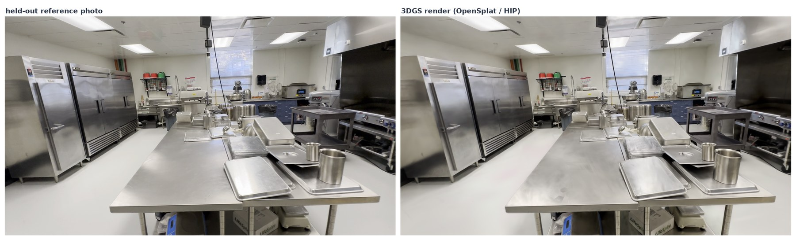
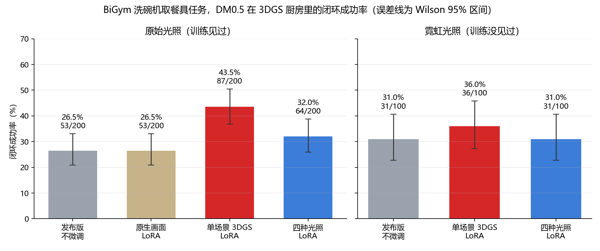
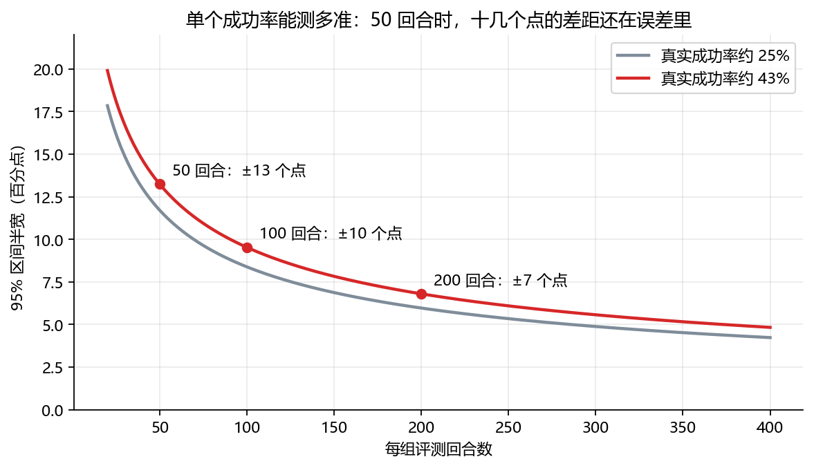
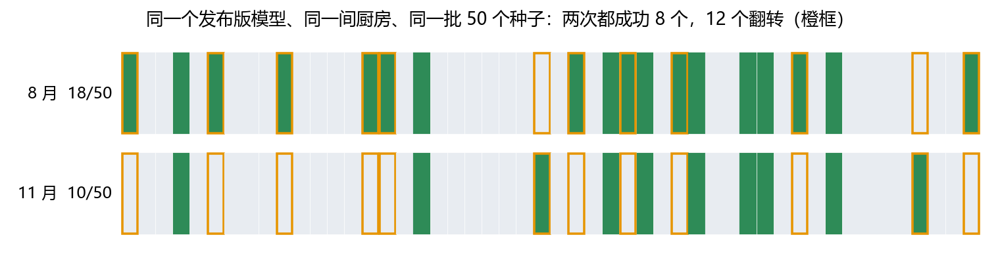
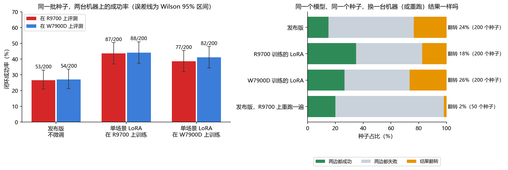
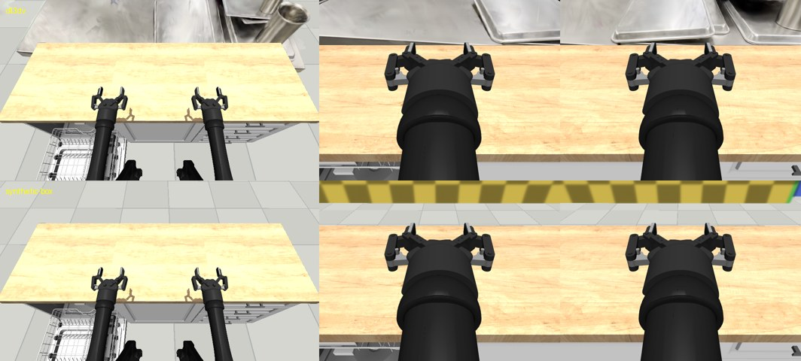

World Labs Atlas · 2026.11.25
【一卡一世界】换了五种灯，机器人只认得那间厨房 | World Labs Atlas × DM0.5 复现笔记









同一个机器人策略、同一组随机种子、一模一样的物理，只把背景从仿真器自带的材质换成一间真实厨房的 3D 高斯重建。总成绩几乎没变：19/50 对 18/50。可逐个种子看，50 个回合里有 25 个换了结局。两边都成功的只有 6 个，两边都失败的有 19 个。
策略对“看起来像什么”敏感到这个地步，那么用世界模型给它造训练场景就很诱人。World Labs 的新一代世界模型 Atlas（Beta 版叫 Marble 2 Beta）给它一张照片和一个新的相机位置，就能画出从那里看过去的样子，还附带每个像素的深度；它的 Relight 功能还能给一个已有的 3D 场景重新打光。我拿它给 Dexmal DM0.5 的训练场景重新打光，再做闭环评测，任务是 BiGym 里的洗碗机取餐具。这一篇是 Radeon 上的复现笔记，回答三个更“工程”的问题：这条从真实拍摄到闭环评测的流水线，在 AMD Radeon 上怎么一步步搭起来；唯一一个站得住的提升（在部署场景里渲染训练数据，DM0.5 成功率高 17 个百分点）到底有多可信；同一个配方换一张卡，这 17 个点还在不在。
先说结论：在部署场景里渲染训练数据，DM0.5 的闭环成功率从 26.5% 提到 43.5%（200 个种子），这个提升在 R9700 和 W7900D 上都复现了；之前在 W7900D 上的“没复现”是 50 个回合太少。换哪张卡训练、换哪张卡评测，总成绩都只差几个点，但同一个种子换一台机器，有大约五分之一会换结局。
复现地图：哪一步在哪张卡上
这个系列叫“一卡一世界”，前面几篇基本都在一张 W7900 上完成。这一篇的流水线更长，用到了两台机器，先把账摊开。
把 DL3DV 厨房的照片重建成 3D 高斯，在本地一张 Radeon PRO W7900D（gfx1100，48 GB）上做。给高斯重新布光在 World Labs 云端的网页版 Marble 上做，再在笔记本的 CPU 上把重光照的颜色迁回原场景。在五种场景里重渲专家演示、LoRA 微调 DM0.5 和闭环评测，都在服务器 A 上做，它用的是 Radeon AI PRO R9700（gfx1201，32 GB）：重渲分成 16 个分片，每组微调用 3 张卡，评测每张卡一个进程。跨机器复现在服务器 B 上做，它是 8 卡 Radeon PRO W7900D：再训一个 LoRA 用 3 张卡，三个模型在两台机器上各测一遍，评测每卡一个进程。凭文字生成新厨房那一步走 World Labs 的 Atlas API，回渲和对齐在 W7900D 上做。
单个任务都能落在一张卡上：重建用一张 W7900D，评测一个回合一张卡，训练则用 3 张卡把有效 batch 凑到 48。下面按流水线的顺序讲。
在一张 W7900D 上重建厨房，再塞进 MuJoCo
场景是 DL3DV-10K 数据集里的一间商用厨房。我用 OpenSplat 的 HIP 版本在一张 Radeon PRO W7900D 上把它重建成 1,458,354 个高斯，在留出的照片上 PSNR 27.9 dB、SSIM 约 0.94。
要拿它当仿真器的背景，还要做三件事。对齐：用一个带缩放的刚体变换放进 MuJoCo 的世界坐标，地面在 z = 0。光栅化：高斯用 gsplat 渲染，gsplat 1.4.0 没有现成的 Radeon 轮子，在 R9700 上按 gfx1201 从源码编（ROCm 7.2.3），到 W7900D 上再按 gfx1100 编一遍。合成：台面、洗碗机、餐具和机械臂仍由 MuJoCo 渲染，按 MuJoCo 的分割图叠在高斯背景前面，头部和两个腕部相机都这样处理，高斯只当外观，不参与任何碰撞。
这样一来，物理模型逐位不变（126 个 body、421 个 geom），只有三路相机看到的画面变了。开头那 25 个翻转的回合，就是在这两种画面下用同一份权重、同一批种子测出来的。
高斯变换：只改颜色的工程
Atlas 的 Relight 在网页上给这间厨房打了四种训练光照（原始、金色黄昏、夜班、台灯）和一种留出光照（霓虹）。导出的 PLY 保持高斯的数量和顺序，但把光照烘焙进颜色、只留 0 阶球谐。
工程上的关键是只迁移颜色，不碰几何。按位置把每个导出的高斯精确匹配回原场景的墙面、吊灯和地面三层：0 阶球谐（底色）照搬重光照的结果；高阶球谐按通道乘以“重光照导出 / 无灯光导出”的亮度比，截断在 0 到 4 之间；位置、朝向、尺度、透明度逐字节不变，所以原来的对齐文件照样适用，仿真那一侧什么都不用改。
结果的上限也在这里：在 519 帧上平均，光照改到的像素在头部相机里约 1%，右腕约 2%，左腕 15–17%。头部相机大部分时间低头看洗碗机和抽屉，背景只占一个角。
配方与吞吐
BiGym 带了 32 条专家演示，是在 MuJoCo 3.1.5、BiGym 4.0 下录的；换到 MuJoCo 3.10、BiGym 4.1 后有 30 条还能回放成功，所有组都用这 30 条。场景只是外观，所以演示可以按原动作回放，机器人走完全相同的轨迹，只有三路图像变了。
训练集分四组。原生画面（对照）：BiGym 原生材质，无 3DGS，30 个回合，19,719 帧。单场景 3DGS：原始光照的 3DGS 厨房，和评测用的相同，30 个回合，19,719 帧。四种光照：原始、黄昏、夜班、台灯，120 个回合，78,876 帧。100 条演示（对照）：3DGS 厨房里 30 条官方演示加 70 条特权专家演示，100 个回合，65,468 帧。
所有组用同一个配方，从发布版检查点出发新加一个 LoRA：rank 32、alpha 16；全局 batch 48（每卡 8 × 3 卡 × 梯度累积 2）；1,000 步；学习率峰值 5e-4，warmup 100 步；归一化统计都用发布版自带的，官方演示与它的偏差在 0.03 个标准差以内。评测用仓库自带的严格 3DGS 闭环评测器：20 Hz 控制，每预测 16 步执行 8 步，最多 800 步。
两种卡上的耗时，条件都在句子里，这不是严格的基准测试。重渲一条演示（三路 3DGS 相机）在 R9700 上约 115 秒。LoRA 训练一步（3 卡，全局 batch 48），R9700 上 15–17 秒，W7900D 上 13.9 秒。一个评测回合，R9700 每卡 1 个进程约 170 秒；W7900D 每卡 1 个进程约 138 秒（只测了 1 个回合），每卡 2 个进程约 180 秒（50 个回合平均）。DM0.5 一次推理（BF16，10 步扩散），R9700 每卡 1 个进程约 670 毫秒；W7900D 每卡 1 个进程约 720 毫秒，每卡 2 个进程 780–810 毫秒。
评测回合的耗时大头是 3DGS 渲染，R9700 上不带外壳的回合只要约 69 秒。W7900D 的 48 GB 显存放得下两个评测进程，每个进程慢一些，但一张卡平均约 90 秒就能跑完一个回合。四种光照的 120 个回合重渲合计 3.8 GPU 小时，一组 LoRA 在 R9700 上约 4.5 小时。
结果
下面的闭环成功率都是在 R9700 上测的。原始光照下：发布版不微调 53/200（26.5%），原生画面 LoRA 53/200（26.5%），单场景 3DGS LoRA 87/200（43.5%），四种光照 LoRA 64/200（32%），100 条演示 LoRA 27/100（27%）。留出的霓虹光照下：发布版 31/100（31%），单场景 3DGS LoRA 36/100（36%），四种光照 LoRA 31/100（31%）。
配对比较用 McNemar 精确检验，每一对都在同一批种子上。单场景对发布版，200 个种子，87 比 53，p = 0.0002。单场景对原生画面，200 个种子，87 比 53，p = 0.0001。原生画面对发布版，200 个种子，53 比 53，p = 1.0。单场景对四种光照，200 个种子，87 比 64，p = 0.003。单场景对 100 条演示，100 个种子，41 比 27，p = 0.009。霓虹下四种光照对发布版，100 个种子，31 比 31，p = 1.0。发布版的后 100 个种子是 11 月 16 日在同一台 R9700 上补测的。
一句话：在部署场景里渲染训练数据有用，在别的画面里微调没用，换光照也没有额外用处。原生画面 LoRA 和不微调的发布版在 200 个种子上一模一样，都是 53 个，说明提升不来自“多训了 1,000 步”，而来自画面和部署环境一致。为什么换光照没用、为什么多加演示反而更差，这里不展开，只盯这 17 个点。
别被 50 个回合骗了
闭环评测的每个回合都要跑两三分钟，样本很贵，所以最容易在统计上自欺。
第一，50 个回合的误差比你想的大。真实成功率在 43% 上下时，50 个回合的 95% 区间约正负 13 个点，100 个回合约正负 10 个点，200 个回合约正负 7 个点。
第二，同一个模型两次测也会差。同一个发布版模型、同一间厨房、同一批 50 个种子，8 月 18/50，11 月 10/50，12 个种子翻转，其中 10 个由成功变失败。8 月和 11 月之间换过软件版本和渲染补丁，评测时还有多个进程共享 GPU；11 月当天再测一遍是 11/50，和 10/50 几乎一样。所以单次评测本身是稳的，两次之间的环境变化足以差出 16 个百分点（配对 p = 0.039）。
第三，看到结果再加样本要老实交代。单场景对原生画面，在最先的 100 个种子上只差 11 个点（p = 0.071）。我是看到这个结果之后才决定在全新的 100 个种子上复测的。为了不让“追加样本”夸大证据，复测单独看：46 比 23（p = 0.0004），方向一致，合并后才是上面的 200 个种子。
由此定下的规矩是：只在同一套环境里比较，所有比较都在同一批种子上配对，每组至少 100 个回合。
换一张卡，17 个点还在吗
之前在 W7900D 上，用同一个配方从头训练的单场景 LoRA，50 个回合只拿到 15/50，同一台机器上的发布版是 14/50，看上去没复现。原因可能有三个：训练用的卡不同、评测用的卡不同，或者 50 个回合太少。
为了把它们拆开，我做了一个 2×2。两个单场景 LoRA，一个在 R9700 上训练，一个在 W7900D 上训练，数据和配方完全相同；连同发布版，三个模型的权重各自拷到两台机器上，在同一批 200 个种子上评测，评测器、参数和厨房场景都一样。两台机器一共跑了 1,200 个闭环回合。
发布版不微调，在 R9700 上是 53/200（26.5%），在 W7900D 上是 54/200（27.0%）。R9700 训练的单场景 LoRA，两边分别是 87/200（43.5%）和 88/200（44.0%）。W7900D 训练的单场景 LoRA，两边分别是 77/200（38.5%）和 82/200（41.0%）。能读出三件事。
第一，提升在两张卡上都成立。在同一台机器上配对比较，两个 LoRA 都比发布版高 12 到 17 个百分点：R9700 上 p = 0.0002 和 0.012，W7900D 上 p = 0.0004 和 0.005。之前的“没复现”是样本太少：同一个 W7900D 训练的 LoRA，扩到 200 个种子后，在 W7900D 上是 82 比 54。
第二，在哪张卡上训练，看不出差别。两个 LoRA 在 R9700 上差 5 个点（p = 0.20），在 W7900D 上差 3 个点（p = 0.50），都在噪声里。要说明的是，两次训练除了硬件不同，随机性也不同，这个实验分不开这两者；要分开，得在同一台机器上换随机种子多训几次。
第三，在哪张卡上评测，总数稳，个体不稳。同一个模型在两台机器上的成功率最多差 2.5 个点。但逐个种子看，换一台机器有 18% 到 26% 的种子换了结局，而同一台机器重跑一遍只有 2%。我的猜测是，两种架构在浮点运算顺序和渲染上的微小差别，在 800 步的闭环里被一步步放大了。好在这些翻转方向是对称的：发布版有 23 个种子只在 R9700 上成功、24 个只在 W7900D 上成功，所以总数稳得住。
单个回合的成败，对硬件几乎是混沌的；能跨机器带走的，只有足够多回合的总数。这也给前面的规矩补上一条：配对比较要在同一台机器上做；跨机器只比总数，而且回合要够多。
在 ROCm 上踩的坑
分割渲染的静默错误。多个 EGL 渲染器同时工作时，MuJoCo 读分割图偶尔会拿到颜色数据并抛出 IndexError，而抛错时场景的分割标志没有复位。之后的 RGB 画面全部变成分割配色，柜子变成暗红色，不报任何错。第一批数据和训练因此整批作废重来。修好的补丁会复位标志，强制 RGB 渲染关掉分割，并拒收看起来像分割图的帧；最终评测里每个进程重渲分割 21 到 157 次，拒收的 RGB 帧是 0。
三套 GPU 编号。rocm-smi、ROCm 运行时（ROCR_VISIBLE_DEVICES）和 EGL（MUJOCO_EGL_DEVICE_ID）对同一张卡的编号可以各不相同：R9700 那台上 rocm-smi 的 7 号卡是运行时的 4 号，W7900D 那台上 EGL 的顺序和 rocm-smi 正好反过来。仓库自带的训练和评测脚本只在 0 号卡上编号正确。脚本统一用 rocm-smi 编号，再按 PCI 总线换算。
gsplat 的即时编译。每个进程加载时都会重新链接一次扩展，多个进程共用一个缓存目录，会读到写了一半的 .so。改成每个任务一份私有缓存。
合用的服务器。R9700 那台有别的用户间歇性占卡，曾让一次训练和几个评测分片显存不足。评测改成按显存空闲情况分块调度、失败自动重试，只补跑缺失的种子。
一张卡重置，整台机器的评测陪葬。做跨机器复现时，W7900D 上一开始每张卡跑两个评测进程，16 个进程各跑了 11 个回合左右，突然一起退出。内核日志里先是 2 号卡报 gfxhub 页错误，十几秒后 7 号卡的 MES（GPU 上负责调度队列的固件）不再响应，驱动对它做了一次 mode1 重置。这一次重置，把整台机器上 8 张卡的评测进程全部带走了。补跑改成每张卡一个进程、8 个种子一块、失败的块自动重试，已经跑完的种子不再重跑。
换卡不换代码，但要换三样东西：架构号、编号表和缓存目录。
Atlas 新世界：W7900D 上到哪一步
Relight 只改光照，Atlas 真正擅长的是凭文字造整个房间。这部分放在 W7900D 上：文生图、定位、一次补出 24 个带深度的视角、草稿重建 splat 走 Atlas API，回渲校验、对齐和闸门在本地。机位、prompt 和闸门的设计这里不展开。
流水线用一个合成房间做过离线测试：坐标系判断正确时回渲 PSNR 是 51 dB，故意翻转后只有 7.6 dB；估出的眼睛高度 1.59 米，和设定的 1.6 米吻合。但五个 Atlas 世界本身还没生成，11 月 15 日上机检查时服务器上的世界目录仍是空的，在等 API 额度。
几点体会
先对齐，再多样。在这个任务里，“训练和部署是同一个场景”比“场景更多样”先起作用，而在不相干的画面里微调等于没训。
结论要先过统计这一关。50 个回合能把一个真实的 17 个点藏起来，也能凭空造出十几个点。配对、够多的种子、在第二台机器上再跑一遍，缺一样都不敢下结论。
别拿单个种子跨机器找原因。同一个种子换台机器，五分之一会换结局。调试时盯着某一个回合在两台机器上“为什么不一样”，多半是在追噪声。
评测流水线要扛得住 GPU 重置。一次重置就能带走整台机器的进程。分块调度、失败重试、只补跑缺失的种子，比“一口气跑完”可靠得多。
Atlas 新世界是下一步。流水线已经在 W7900D 上测通，额度一到就生成五间厨房，用同样的 2×2 思路去测“见过更多厨房”到底值多少。
带走三句话
在部署场景里渲染训练数据，DM0.5 的闭环成功率从 26.5% 提到 43.5%，在 R9700 和 W7900D 上都复现了；在原生画面里微调则毫无提升。
换光照没有额外用处；50 个回合的“没复现”是样本太小，200 个种子一测就回来了。
同一个模型、同一个种子换台机器，大约五分之一会换结局：配对比较留在同一台机器上，跨机器只比总数。
相关链接：World Labs Atlas 发布博客 https://www.worldlabs.ai/blog/atlas ；DL3DV-10K https://huggingface.co/datasets/DL3DV/DL3DV-ALL-2K ；BiGym https://github.com/chernyadev/bigym ；DM0.5 https://huggingface.co/Dexmal/DM05 ；OpenDM https://github.com/dexmal/opendm ；gsplat https://github.com/nerfstudio-project/gsplat
DL3DV-10K 采用 CC BY-NC 4.0 许可，仅限非商业研究使用。